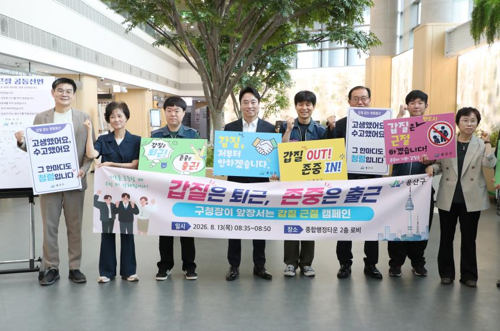

용산구청장, 출근길 갑질 근절 캠페인 직접 참여…9월까지 집중 신고기간
공동선언문 서명·손팻말 캠페인, 한 달간 갑질 신고센터 운영

[시사포커스 / 김재록 기자] 서울 용산구(구청장 김경대)가 13일 아침 종합행정타운 2층 로비에서 구청장이 직접 나서는 갑질 근절 캠페인을 전개했다. 이번 캠페인은 조직 내 부당한 업무지시, 폭언, 인격모독 등 갑질 문제를 사전에 예방하고, 기관장부터 솔선수범해 상호 존중과 배려의 문화를 정착시키겠다는 의지를 전 직원에게 전달하기 위해 마련됐다. 행사에는 김경대 용산구청장을 비롯해 부구청장, 국장단, 용산구공무원노동조합, 직원들이 함께 참여했다.
이날 행사는 오전 8시 35분부터 갑질 근절 공동선언문 서명으로 시작됐다. 구청장과 간부진이 먼저 선언문에 서명한 뒤 출근하는 직원들도 자율적으로 참여했다. 이어 '갑질은 퇴근! 존중은 출근!' 등의 문구가 적힌 현수막과 손팻말을 활용한 캠페인이 진행됐으며, 갑질 예방과 청렴 실천의 의미를 담은 청렴비타민도 배부됐다. 김경대 구청장은 "강한 사람에게 약하고 약한 사람에게 강한 조직은 결코 건강한 조직이 될 수 없다고 취임 초부터 강조해왔다"라며 "갑질 없는 공직문화를 만들기 위해 다양한 청렴 시책을 지속적으로 추진해 서로 존중하는 조직문화를 조성하고, 그 결과로 구민들이 더욱 질 높은 행정서비스를 누릴 수 있도록 최선을 다하겠다"고 밝혔다.
구는 13일과 14일 출근시간대에 직원들이 내가 바라는 조직문화, 구청장에게 바라는 점, 서로 전하고 싶은 존중의 말, 갑질 없는 직장을 위한 실천 다짐 등 자유롭게 의견을 적어 붙일 수 있는 '직원 참여 메모 게시판'을 운영한다. 또한 캠페인과 연계해 13일부터 9월 11일까지 한 달간 '갑질 집중 신고 기간'을 운영하며, 부당 업무지시·언어적 괴롭힘·직장 내 괴롭힘·사적 용무 지시 등을 대상으로 용산구 갑질 피해 신고센터를 통해 접수받는다. 신고자의 익명성은 철저히 보장된다.